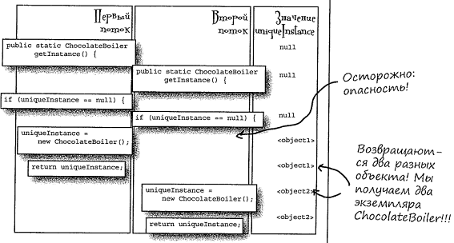
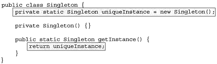
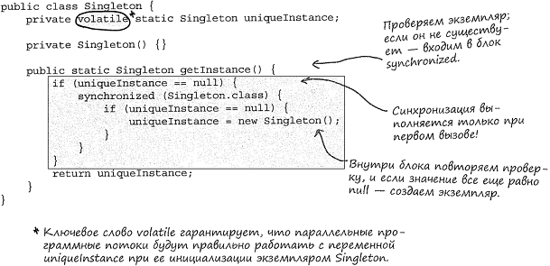

Опасность:
Решения:
1) Просто быть уверенным, что такого не произойдёт.2) Инициализировать заранее:3) Воспользоваться «условной блокировкой», чтобы свести к минимуму использование синхронизации в getlnstance()